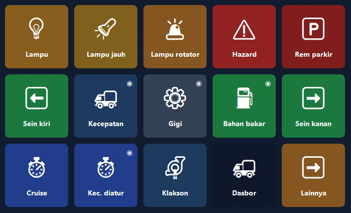
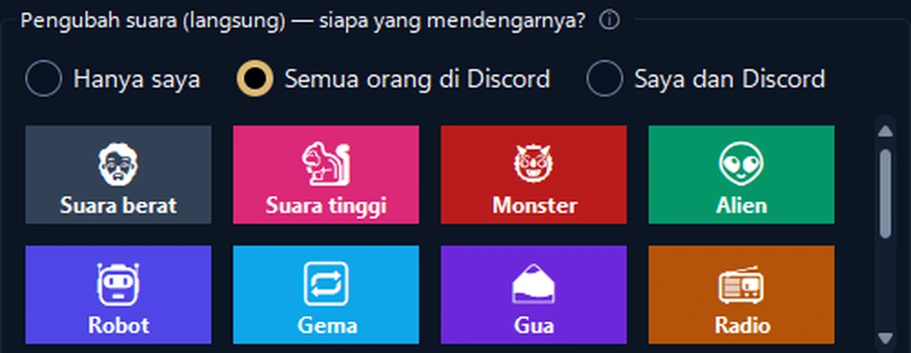
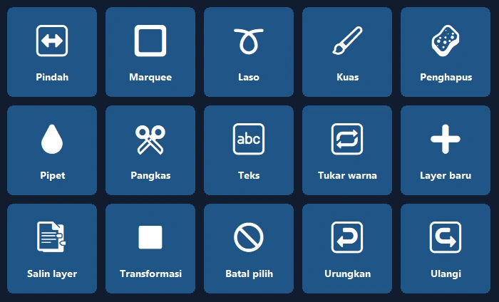
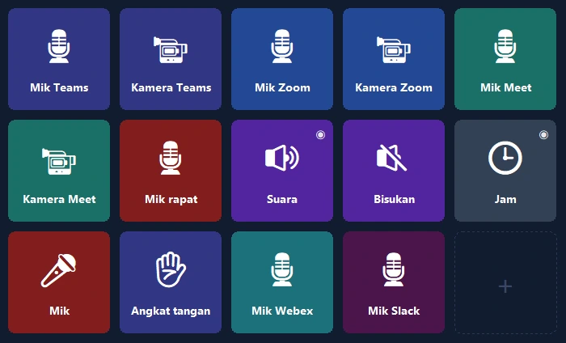

Ponsel Anda, panel kontrol PC Anda.
Pintasan sekali ketuk, OBS, Discord, Spotify, dan panel game. Lewat USB, Wi‑Fi, atau data seluler, dengan enkripsi end-to-end.
Dasbor truk Anda, kini di ponsel.
Kecepatan, RPM, bahan bakar, dan lampu indikator realistis secara langsung; kendali truk cukup sekali ketuk.
- 🚦Dasbor sungguhanKecepatan, batas, RPM, bahan bakar, dan waktu tiba; lampu menyala seperti di dalam game.
- 🕹Kendali sekali ketukLampu, rem parkir, cruise control; lihat ke kiri atau kanan dengan sekali ketuk.
- 📳Tanpa pengaturanSaat game dibuka, ponsel menawarkan panel siap pakai lalu beralih ke sana sendiri setiap kali.

Kelola siaran dengan satu tangan.
Ponsel Anda pengganti perangkat mahal: OBS, efek suara, Discord, dan musik dalam satu layar.
- 🎬Kontrol OBSAdegan, rekam dan siaran, pengatur waktu langsung di tombol.
- 📳Panel suara dan musikPutar suara siap pakai, kendalikan Spotify dan volume tiap aplikasi dari satu layar.
- 🎙Studio SuaraSuara wanita, pria, dan anak yang alami, atau suara Anda sendiri; matikan mikrofon Discord sekali ketuk.


Buka programnya, panel sudah siap.
Panel berdasarkan pintasan resmi Photoshop, Premiere Pro, After Effects, Illustrator, DaVinci Resolve, Blender, Figma, dan VS Code.
- ✨Tanpa pengaturanSaat program tampil di depan, ponsel menawarkan panelnya lalu beralih ke sana sendiri (Pro).
- ⌨Pintasan yang tepatAlat, layer, urungkan, penanda: dengan pintasan standar setiap program.
Mikrofon cukup sekali ketuk.
Matikan mikrofon di Teams, Zoom, Meet, Webex, dan Slack tanpa mengatur pintasan, bahkan saat jendela rapat ada di belakang.
- 🎙Hanya program ituWindows mematikan mikrofon hanya untuk program rapat; program lain tidak tersentuh.
- 🔴Status selalu terlihatSelama mikrofon mati, lampu tombol menyala merah; tersedia juga di versi gratis.

Layar paling berguna di meja Anda.
Mulai dalam semenit dengan tata letak siap pakai; logo asli program Anda muncul sendiri.
Layar kedua
Lihat layar PC di ponsel dan gunakan sebagai mouse sentuh dan keyboard.
Volume per aplikasi
Volume setiap program secara terpisah; headphone ↔ speaker sekali ketuk.
Halaman pintar
Halaman mengikuti program yang aktif; pengatur waktu, folder, dan aksi bertahap.
Terhubung dari mana saja
Tidak perlu Wi‑Fi yang sama: bisa lewat data seluler dan dengan beberapa PC.
Cadangan cloud terenkripsi
Tata letak disimpan terenkripsi tanpa akun dan kembali di PC baru.
Privasi
Tanpa akun, tanpa iklan, tanpa pelacakan. Tombol Anda tetap di perangkat Anda.
Siap dalam semenit.
Pasang program
Unduh PanelDeck gratis untuk Windows lalu buka.
Pindai QR
Aplikasi ponsel terhubung dalam hitungan detik dengan kode QR.
Ketuk
Pilih tata letak siap pakai atau buat tombol sendiri.
Bayar sekali, pakai selamanya.
Tanpa langganan, tanpa iklan, tanpa pelacakan. Semua pembaruan termasuk. Google Play menampilkan harga lokal untuk negara Anda.
Gratis
- Terhubung lewat USB, Wi‑Fi, dan data seluler
- 6 tombol di halaman pertama
- Pintasan, media, buka program, Discord, pengatur waktu
PanelDeck Pro
Harga peluncuran; lalu US$6,99. Coba gratis 7 hari.
- 6 tab, folder dan tombol tanpa batas
- Layar kedua, penggeser volume, info langsung
- Panel truk, Studio Suara, panel saat program dibuka
- Cadangan cloud terenkripsi
Perlu diketahui
Apakah perlu akun?
Tidak. PanelDeck tidak meminta akun; tombol Anda tetap di perangkat Anda.
Apakah bisa di luar rumah?
Bisa. Tanpa Wi‑Fi yang sama, ponsel terhubung lewat data seluler dengan enkripsi end-to-end.
Game apa saja yang didukung?
Euro Truck Simulator 2 dan American Truck Simulator didukung penuh. Panel langsung untuk simulator balap dan penerbangan masih beta.
Apakah ada versi iPhone?
Untuk saat ini hanya Android. Versi iPhone dan iPad sudah direncanakan.
Windows menampilkan "Windows melindungi PC Anda", apa yang harus dilakukan?
Klik "Info selengkapnya" → "Tetap jalankan". Rinciannya ada di panduan pemasangan.
Siapkan panel Anda hari ini.
Mulai gratis dan beralih ke Pro kapan pun Anda mau.
⬇ Unduh gratis untuk Windows